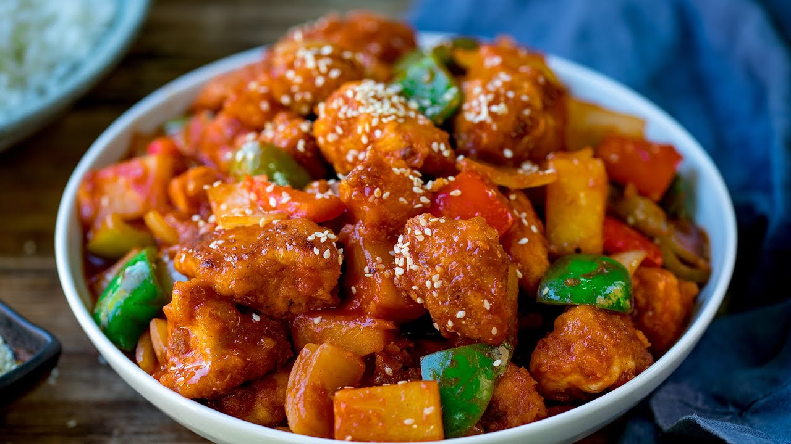

Sweet And Sour Chicken

Description
This is a recipe for sweet and sour chicken. I hope you find the instructions easy to follow
and have a delicious meal to serve for your family.
Ingredients
- Ketchup
- Vinegar
- Sugar
- Garlic
- Chicken
- Onion
- Red Peppers
Steps
- In a large microwaveable dish, mix the ketchup, vinegar, sugar and garlic thoroughly with the chicken, onion and peppers.
Microwave, uncovered, on high for 8-10 mins until the chicken is starting to cook and the sauce is sizzling.
- Stir in the pineapple pieces and sugar snap peas and return to the microwave for another 3-5 mins until the chicken is completely cooked.
Leave to stand for a few minutes, then stir in the cashews, if using, and serve.